2. GLB Import 工坊 (GLB 格式）模型规范
The tutorial process uses Blender modeling software, and the steps can be referred to for other modeling software as well. Blender can be downloaded for free on Steam.
教程使用的流程均为 Blender 建模软件的流程，其他建模软件也可以参考此教程的一些规范， Blender 可在 Steam 上免费下载。
The finished file this tutorial provided.
本期教程的所完成的案例文件
Prepare Visual Model 准备外观模型
If using Blender, please refer to the following documentation. For the PBR workflow, follow the PBR rules outlined in the documentation to create the following textures: 1. Base Color, 2. Metallic and Roughness, 3. Baked Ambient Occlusion, and 4. Normal Map. Other textures mentioned in the documentation are not required. You can use Substance Painter to create the necessary textures. If not following the PBR workflow, you need to create 1. Base Color (mandatory) and 2. Normal Map (optional). However, the model will not achieve realistic physical reflections.
若使用 Blender，则可以参考下面的文档。
制作 PBR 流程，则需按文档中的 PBR 规则，制作 1. 基础色，2. 金属度与粗糙度，3. 烘焙的环境光遮蔽与 4. 法线贴图。 其他文档中提及的贴图无需制作。可使用 Substance Painter 制作相应的贴图。
若不按 PBR 流程制作，则需要制作 1. 基础色 （必选） 2. 法线贴图 （可选）。但是模型无法获得真实的物理反光效果。
（中文用户点击此链接打开文档：https://docs.blender.org/manual/zh-hans/4.3/addons/import_export/scene_gltf2.html）
Preview the effect of the completed model in Blender.
制作完成后的模型在 Blender 中的效果预览。
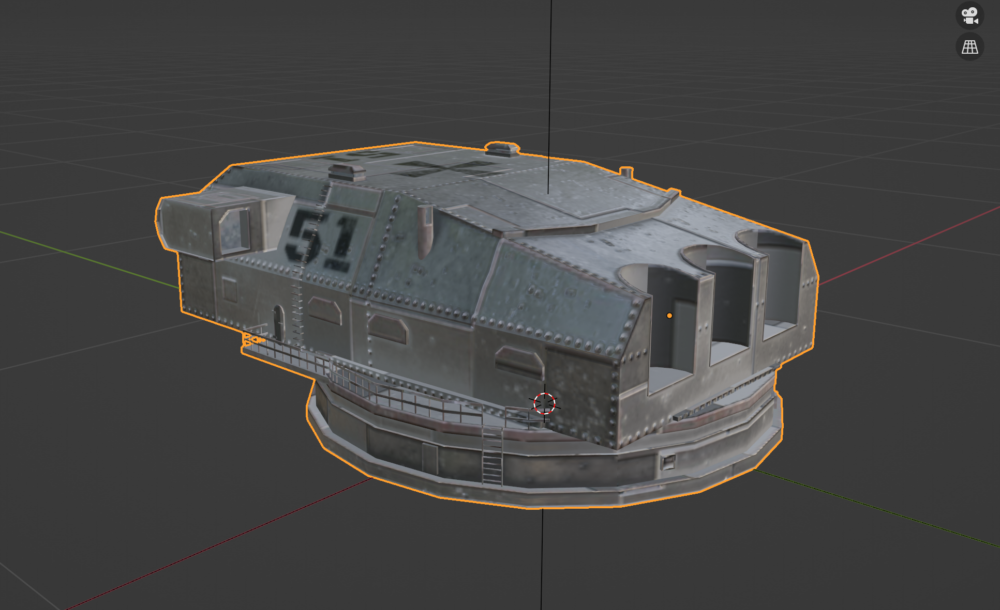
Additionally, you need to use LOD tools to create corresponding low-polygon models for displaying objects at a distance, reducing rendering performance pressure. You can choose to use the InstaLOD Blender plugin to automatically create LODs:
此外，你需要使用 LOD 工具，制作对应的低多边形的模型，用于物体在远处的显示，以降低渲染性能压力。
可以选择使用 InstaLOD 的 Blender插件自动制作 LOD：https://docs.instalod.io/en/Products/Integrations/InstaLOD_For_Blender
InstaLOD for Blender (Windows _ MacOS).zip
or use InstaLOD Studio.
或者使用 InstaLOD Studio
Child-Parent 父子关系
Rule 放置规则
Create four empty objects (Shift + A and select Empty - Plain Axes) and name them Visual, Collider, HitBox, and Module respectively. Note that the size and spelling must be exactly the same. Visual is used for placing the appearance model and LOD, Collider is used for placing non-concave collision models, HitBox is used for placing external armor, and Module is used for placing internal armor.
创建四个空物体 （Shift + A 选择 Empty - Plain Axes），并分别命名为 Visual，Collider，HitBox 与 Module。 注意，大小与拼写需要保持完全一致。 Visual 用于放置外观模型与LOD，Collider 用于摆放非凹的碰撞模型，HitBox 用于放置外部装甲，Module 用于放置内部装甲。
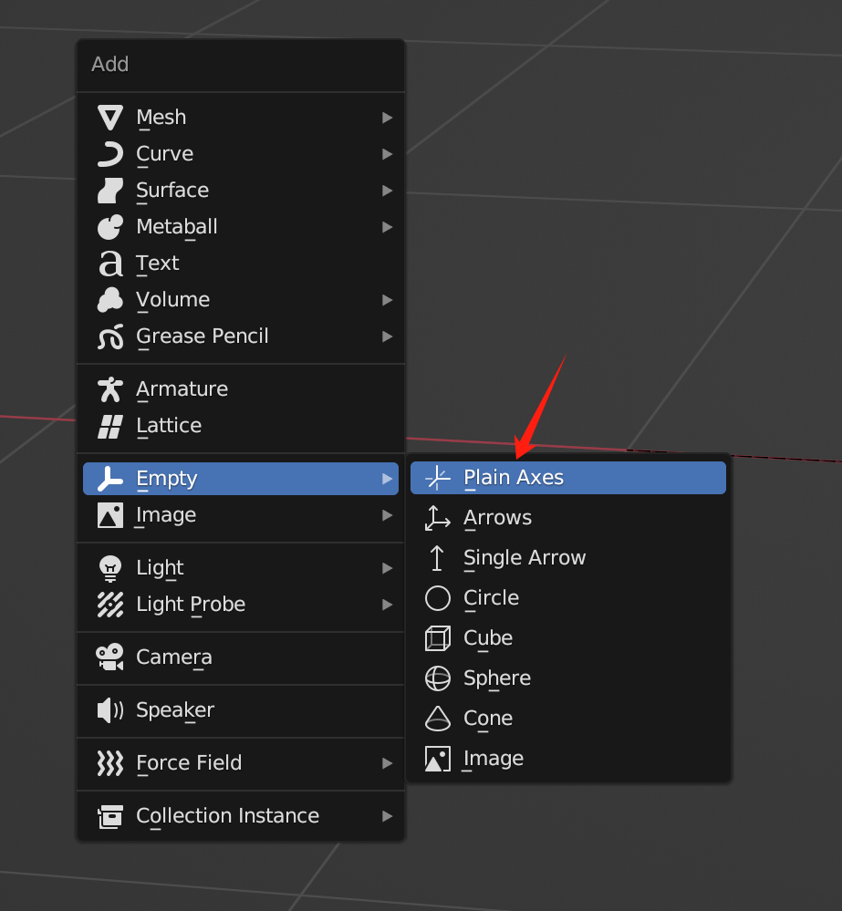
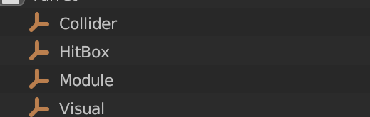
Completed State 制作完成后状态
After completing the various models, place them according to the rules in section 2.1. The specifications for creating damage models and internal structure models will be introduced in sections 3 and 4. (If this module is an object that can be hit by shells, these two models must be created.) The Collider collision model only needs to be created when making the vehicle hull model.
在制作完成各类模型后，按照 2.1 的规则放置各类模型。
伤害模型与内构模型的制作规范会在第 3，4 节中介绍。 （若此模块是可被炮弹击中的物体，则必须制作这两个模型）
Collider 碰撞模型只有制作车体模型时候才需要制作。
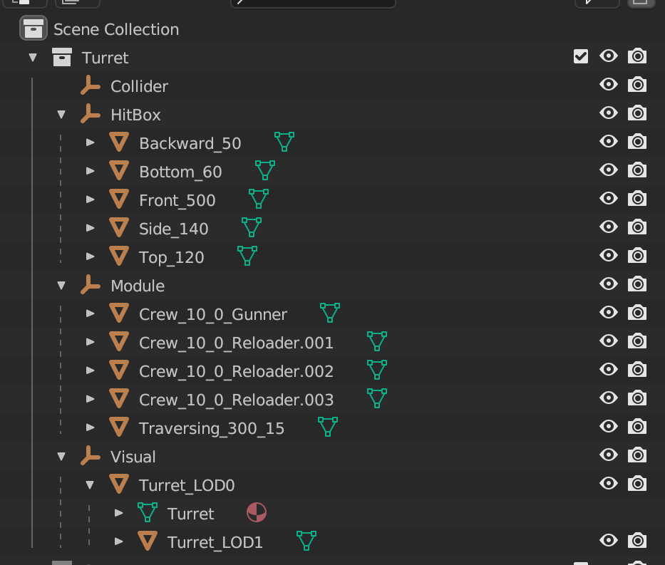
LOD 特殊处理
Make the LOD models child objects of the unoptimized model and name them OriginalObjectName_LODNumber (starting from 1, up to a maximum of 3 LOD levels). **The name of the unoptimized original model must end with LOD0. **
将 LOD 模型作为未优化模型的子物体，并命名为 原始物体名称_LOD序号 （序号从1 开始，至多可以制作3层 LOD)。未优化的原始模型的名称必须以 LOD0 结尾。
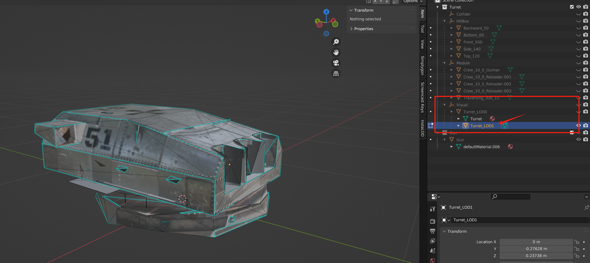
LOD 模型
HitBox 外部装甲
Reduced-polygon versions of the visual model. Models with different armor thicknesses need to be separated and then set their armor type and armor thickness according to the naming conventions in section 5.
外观模型的减面版本的模型。 不同装甲厚度的模型需要分离开，然后通过第5节的命名规范设置其装甲类型，装甲厚度。
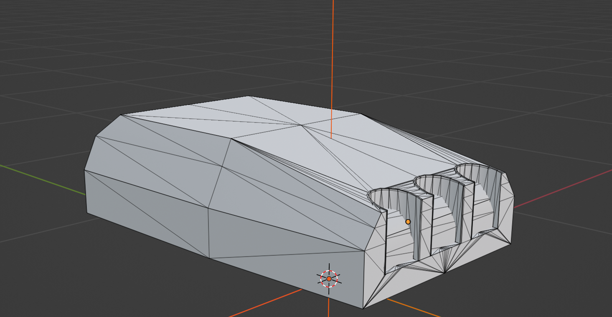
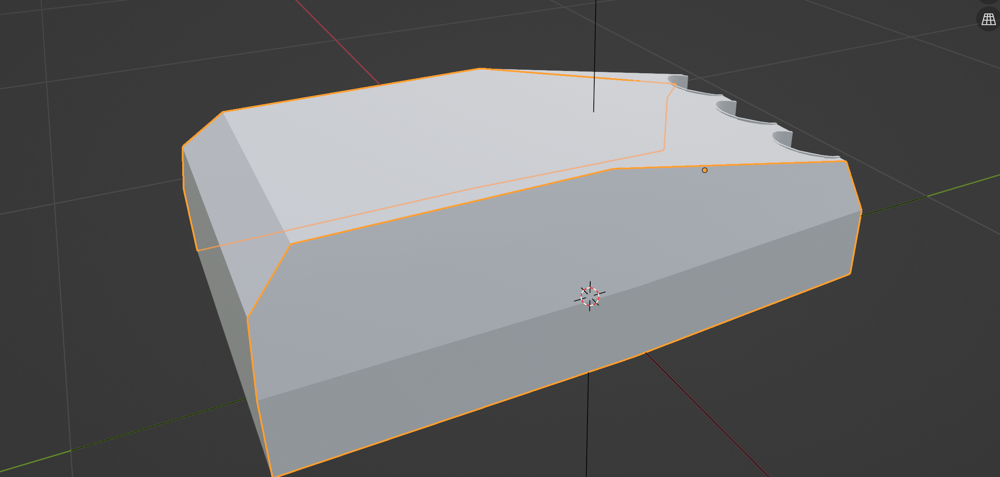
Internal Module 内构模型
Lower-polygon internal module models are used for post-penetration shell damage. Then, set their type, armor thickness, and health according to the naming conventions in section 5.
较低面数的内部模块模型，用于炮弹后效伤害。 然后通过第5节的命名规范设置其类型，装甲厚度与血量。

Collider 碰撞模型
只有制作给车体的模型，才需要制作碰撞模型。
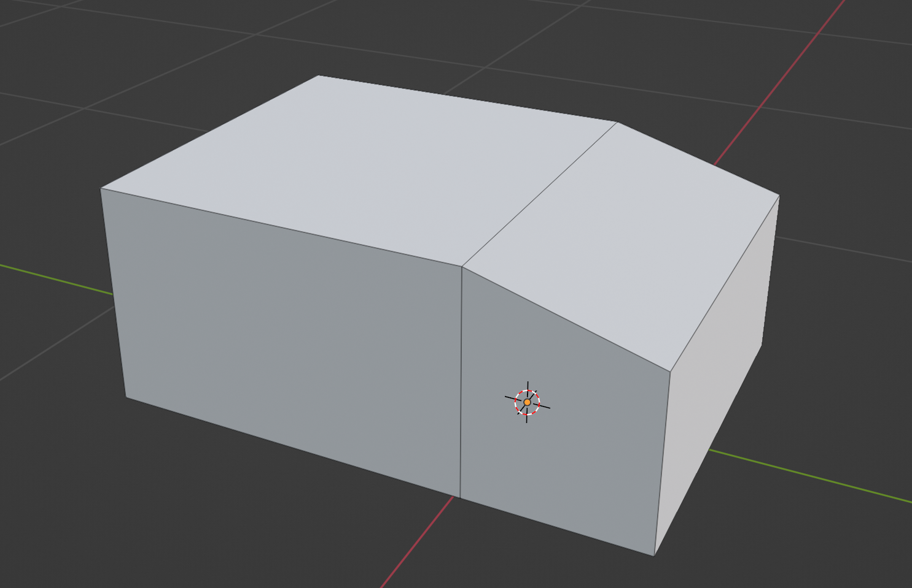
Naming 命名规范
Export 导出
Select the model you want to export, then click on glTF 2.0, choose the .glb format, check Selected Objects, and click Export.
选中你要导出的模型，然后点击 glTF 2.0，格式选择 .glb ，勾上 Selected Object，然后点击 Export。
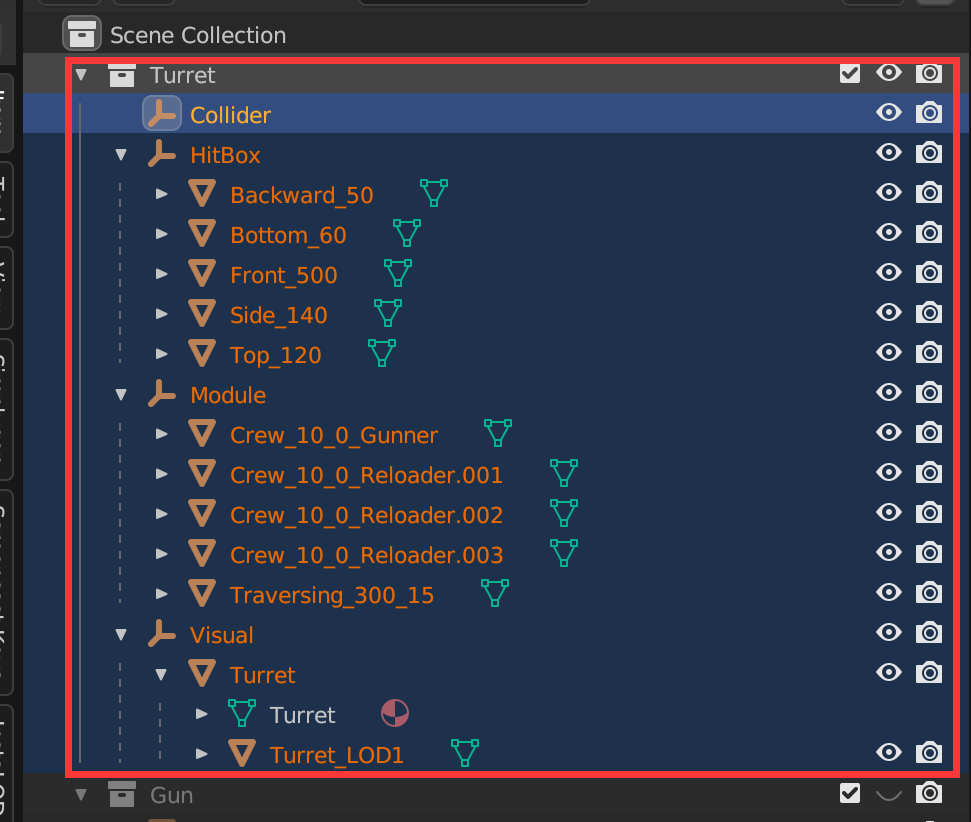
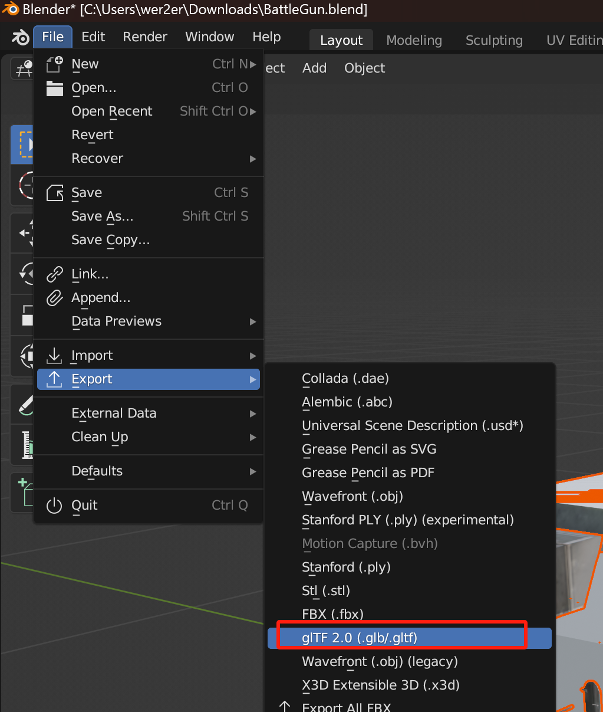
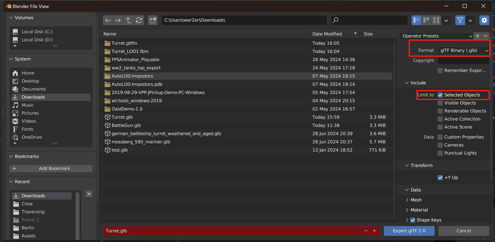
Using Model 使用模型
Use Model Importer
使用模型导入工具
Windows Platform 电脑平台
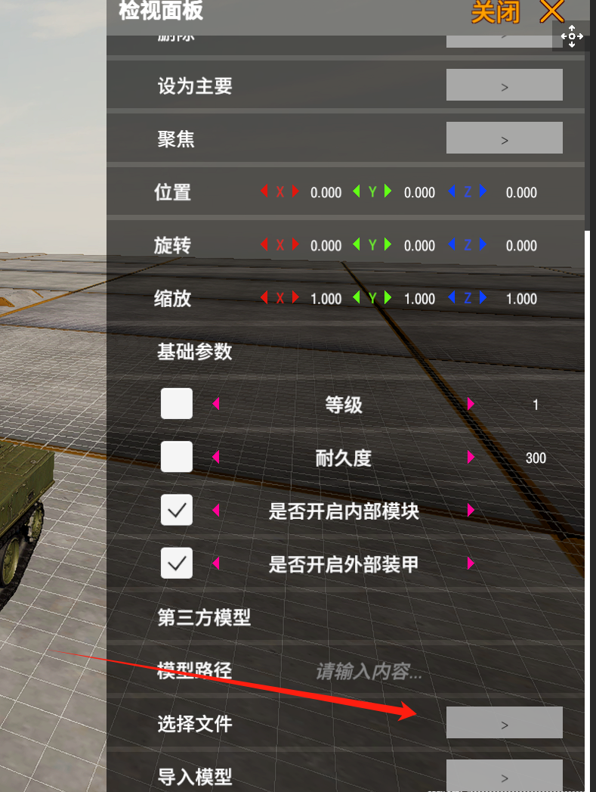
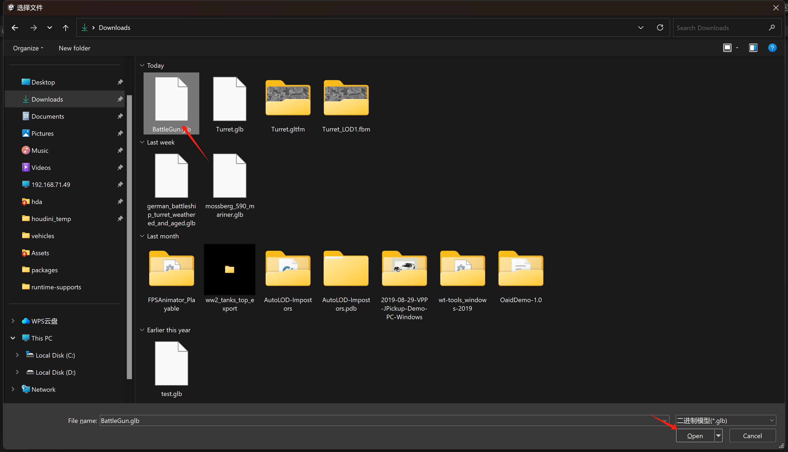

Android Platform 安卓平台
Click on the glb format file and select Panzer War: Definitive Edition as the opening application. Enter the Tank Workshop, choose Model Import, and enter your glb file name (including the file extension).
点击 glb 格式文件，打开方式选择 装甲纷争：决定版。进入坦克工坊，选择 模型导入，输入你的 glb 文件名 （带后缀）